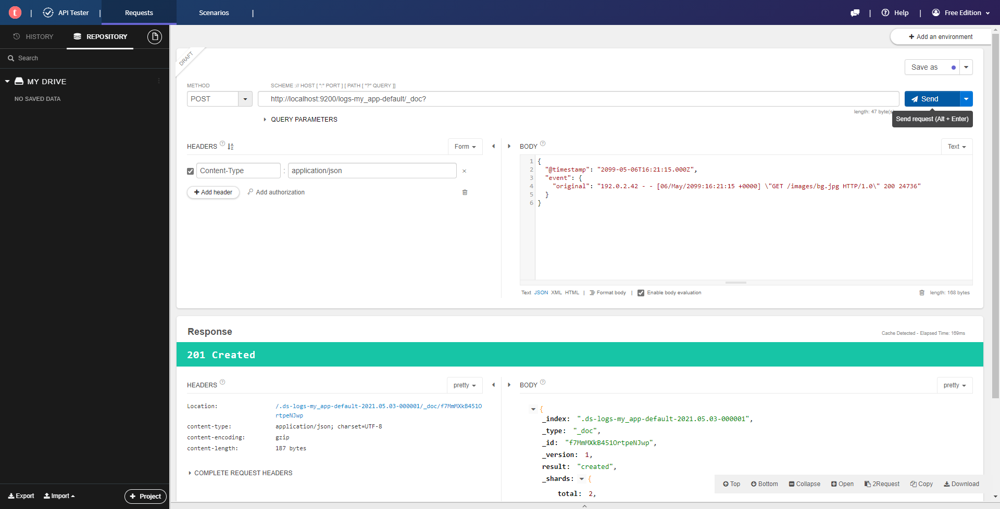

1 elasticsearch是什么
es是一个分布式的搜索和分析数据的引擎。es是基于Apache Lucene开发的，Apache Lucene库提供了很多API，但是偏底层，没有进行封装的话在项目中直接使用是很不方便的。
es本身可以存储和读取数据，那么跟数据库有什么不同呢？
这里有个概念叫反向索引(也叫倒排索引)，英文是Inverted Index，全文搜索和搜索引擎技术都依赖于这种数据结构。常规的数据库采用的是与之对应的Forward Index。
比如，常见的技术书籍，通常在最后几页会有一个索引表，可以让你快速定位到某个名词对应的内容在第几页，这就是反向索引。而整本书的编排就像正向索引，你可以快速翻到某一页知道上面是什么内容。这两种索引技术是互补的，一本书如果根据索引表来编写，就显得没有逻辑，同样，缺少了索引表，作为工具书查询的时候效率也很低下。
再举个例子，搜索引擎的运作也依赖反向索引，当你输入一个关键字进行搜索时，它不可能把整个网络世界的所有网页都搜一遍，从技术上来说这也不现实。一般来说，搜索引擎会利用爬虫不断的收集网络中的信息，给其中出现的关键字添加记录，指明这些关键字分别在哪些网页中出现了，当你搜索这些关键字的时候，对应的网页记录就显示出来了。当然，搜索引擎具体的工作方式还有很多影响因素，可以参考Goolge的科普专题：How Google Search works。
通过比较可以发现，数据库更偏向于存储数据，而反向索引则侧重于检索和分析数据，它的一系列操作就是为你的搜索作提前准备的，就像搜索引擎在你浏览网页之前，已经用爬虫分析了很多网页，看里面有哪些关键词，并进行分类记录，这都需要消耗资源。
es就像一个小型的搜索引擎，为你的数据建立索引，然后提供搜索和分析数据的功能。
web开发中，在以下场景可以使用es：
- 你的网站或者APP需要添加搜索功能
- 存储和分析日志等
- 使用机器学习自动对数据进行实时分析和建模
2 运行es
es跟redis类似，本身需要先运行一个server端，然后用client去连接server。
2.1 运行server端
详见官方文档，启动server端比较简单，在windows上两种常见的运行方式：
- 下载es压缩包，解压以后直接在本地运行
- 在docker里面运行
server端通常开放9200端口。
2.2 运行client
client是相对于server的称呼，实际上我们通过API就可以直接跟server端通信了。
比如，在官方入门教程中，从step3开始的那些操作，都可以用api测试软件来直接测试，不需要安装并运行Kibana这一步。
举个例子，step3里面的添加数据，在Kibana中运行代码如下：
1 | POST logs-my_app-default/_doc |
那么，可以用api测试软件（如chrome应用商店里的Talend API Tester - Free Edition）发送post请求到http://localhost:9200/logs-my_app-default/_doc?并携带{}的内容。如下图所示：
查看图片

教程中GET方法携带了json内容，而常规的GET方法不能携带内容，这里只要把GET改成POST即可。
3 在java项目中使用es
主要介绍当下流行的两种方式。
3.1 Java High Level REST Client
官方提供的方式，通过引入Maven依赖直接使用。
第一步：引入依赖
1 | <dependency> |
官方还有一个Java Low Level REST Client，这个更接近原版的es操作，Java High Level REST Client是在其基础上进一步封装。
关于Jest：jest是
Java HTTP Rest client for ElasticSearch，是java端的RESTful风格的client，但现在很少用了。从es源码和jest源码的历史分析，es最早在2010年发布，而jest在2012年发布，但es直到2016发布的5.0版本之前，官方都没有提供RESTful风格的java client，而是一直用的TranspostClient。5.0版本的es提供了Java Rest Client，而2017年的6.0进一步提供了Java High Level REST Client，并将原来的Java Rest Client更名为Java Low Level REST Client，至此以后，jest逐渐淡出历史舞台，最后一次release已经是2018年，所以本文不再介绍jest的使用。
第二步：初始化client
RestHighLevelClient的初始化要依赖于REST low-level client builder,因为后者在运行时有一些连接池和线程资源，所以在使用后需要手动关闭RestHighLevelClient来间接释放这些资源。
1 | RestHighLevelClient client = new RestHighLevelClient( |
第三步：创建对应功能的Request
整个RestHighLevelClient的使用方式就是，在上面第二步的初始化后，根据不同的需求去构造对应的xxxRequest，然后用client去执行这个xxxRequest,并返回xxxResponse。
同步执行方式为client.xxx(xxxRequest,options)，异步执行方式只需在xxx后加Aysnc标识，如client.xxxAsync(xxxRequest,options)，但异步执行不能马上获取结果，需要借助回调函数处理。
比如，要构建Index
1 | //示例数据 |
要执行search
1 | //构建SearchRequest |
更多API使用参见官方文档